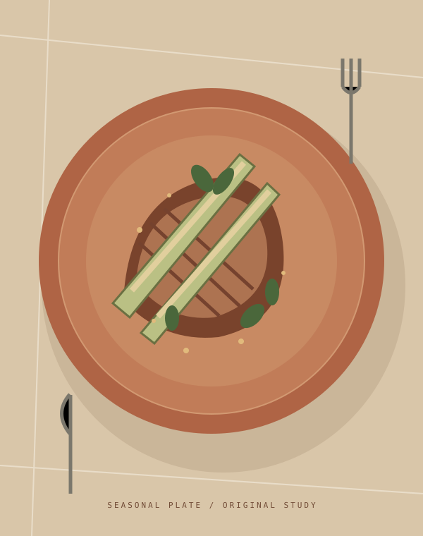

FOR A SMALL GATHERING
Gather
£95/ guestFrom 8 guests
- Three seasonal courses
- Chef-at-home service
- Canapé reception
- Kitchen pack-down
Good food. Beautifully considered.
THE CRAFTSeasonal ingredients.
A generous table.
Nothing without a reason.
THE OCCASIONFrom eight around a table
to a room full of people
you love.

A CATERING HOUSE, QUIETLY
We start with what is in season and who is coming. Then we consider the room, the pace, the light. The result should feel effortless, even when the preparation is anything but.
Menus, service and the small details are designed together. Good hosting gives you space to be a guest at your own table.
Tastings, menus, bar and service.
Full service · 40 to 400 guests
Chef’s tables and celebrations at home.
From eight to sixty guests
Long lunches, launches and offsites.
Considered hospitality for your team
On-set catering and editorial plates.
Styling · Shoots · Campaigns
FOR A SMALL GATHERING
From 8 guests
FOR THE BIG MOMENTS
From 40 guests
A WHOLE DAY, CONSIDERED
120+ guests · price on application
Illustrative prices per guest, excluding VAT, service, travel and rentals. A personal quote confirms all inclusions.
The room, the season and the feeling you are chasing.
A menu and service plan against your budget.
A tasting to make the details feel like you.
Kitchen, service and pack-down, planned together.
BEFORE YOU ASK
Allow 6 to 12 months for weddings and 3 to 6 weeks for private dinners. Availability is confirmed directly, not on this page.
Tell the kitchen about dietary requirements and allergies during the brief. Suitability and cross-contact precautions need individual confirmation.
Destination work can include travel, accommodation and kitchen logistics, itemised in your quote.
Food, preparation, staffing and equipment are detailed individually. Bar, styling, rentals and taxes are specified separately.
The sample Celebrate package includes a private tasting. Discuss dates and costs with the team.
This concept creates an enquiry draft only. A written agreement and directly arranged payment would be needed for a real event.
THE FIRST INGREDIENT IS A CONVERSATION
No perfect brief required. A date, a rough guest count, a little about the occasion.
BROWSER-ONLY ENQUIRY DRAFT
MINIMUM 8 GUESTS
NO DATE IS HELD
Gather · £760 food estimate for 8 guests
VAT, service, travel and rentals excluded. Estimate only.